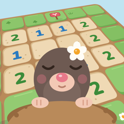

Mind the Moles
PRIVACY POLICY
Last updated: 24 November 2026
The short version: Mind the Moles does not collect, store, share or sell any information about you. It has no accounts, no ads, no analytics and no tracking, and it works entirely offline.
What the app stores
Your games in progress, level results, daily plot streak and settings (sound, music, haptics) are saved on your own device so you can pick up where you left off. This information never leaves your device. Deleting the app deletes it.
What the app does not do
- It does not ask for your name, email address or any other personal details.
- It does not use your location, contacts, photos, camera or microphone.
- It does not contain advertising or third-party analytics or tracking tools.
- It does not connect to the internet to play.
Sharing a daily result
If you tap Share on a finished daily plot, your device's own share sheet opens with a short text result. What you do with it, and which app you send it through, is up to you; Mind the Moles does not see or keep it.
Children
Mind the Moles is suitable for all ages and collects no information from anyone, including children.
Changes
If this policy ever changes, the new version will be posted on this page with a new date.
Contact
Questions about this policy: austin@farrnet.com